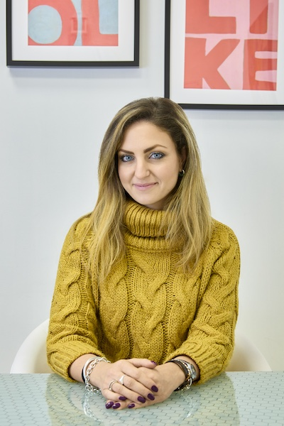

Laureata con lode presso la facoltà di Medicina e Psicologia dell'Università degli Studi "La Sapienza" di Roma, dal 2017 sono iscritta all'Albo degli Psicologi del Lazio con numero {{ site.data.contact.numero_albo_psicologi }}.
Psicoterapeuta, specializzata in Psicoterapia Cognitivo-Comportamentale (CBT) presso la Scuola di Specializzazione Cognitiva di Roma e socia della Società Italiana di Terapia Comportamentale e Cognitiva (SITCC).
Negli anni ho approfondito gli studi sulla Psicopatologia svolgendo attività clinica, di ricerca e di promozione del benessere psicologico, collaborando con le scuole e con il Centro di Salute Mentale della Asl di Roma 6.
Mi occupo di bambini, adolescenti e adulti accogliendo le difficoltà e i problemi che possono insorgere in ogni fase del ciclo di vita.
Lo scopo del lavoro terapeutico è quello di comprendere e dare un senso ai propri vissuti e al proprio disagio, che emergono come incomprensibili e spiacevoli, acquisendo consapevolezza sul proprio modo di funzionare e relazionarsi per sperimentare nuove possibilità di crescita e di benessere.
Tecniche psicoterapeutiche specifiche e competenze acquisite
Da diversi anni, lavoro in contesti clinico-riabilitativi e mi occupo di prevenzione dei disturbi psichici e di supporto psicologico rivolto ad adulti e bambini.
Come psicoterapeuta dell'età evolutiva, fornisco supporto alle famiglie tramite percorsi di parent-training, nonchè interventi psicoeducativi rivolti a bambini, adolescenti e a sostegno della genitorialità.
Le aree di maggior intervento sono i disturbi d'ansia, dell'umore e dell'alimentazione.
Nel corso degli anni, ho approfondito tecniche mindfulness e di rilassamento rivolte a grandi e piccoli, per la riduzione dello stress.
Ricopro inoltre il ruolo di tutor disciplinare-didattico presso l'Università degli Studi "Guglielmo Marconi" di Roma per i corsi di Laurea in Scienze e Tecniche Psicologiche
e di Laurea Magistrale in Psicologia.